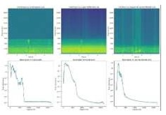
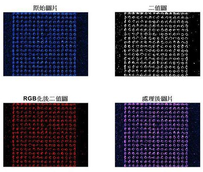
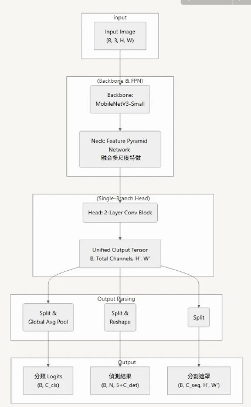
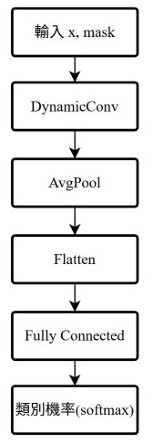
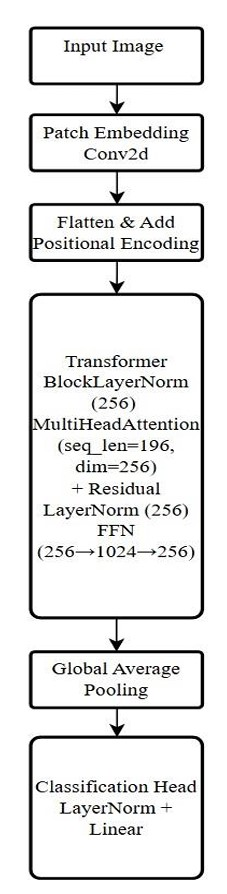
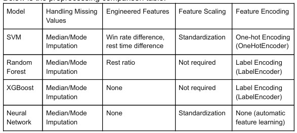
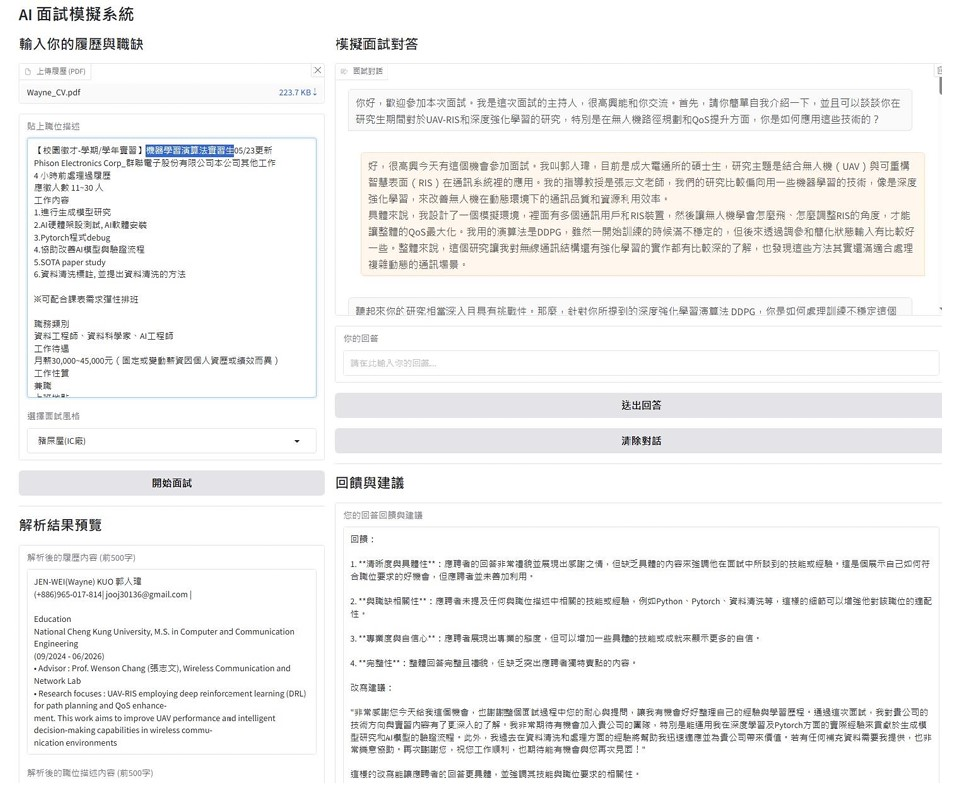
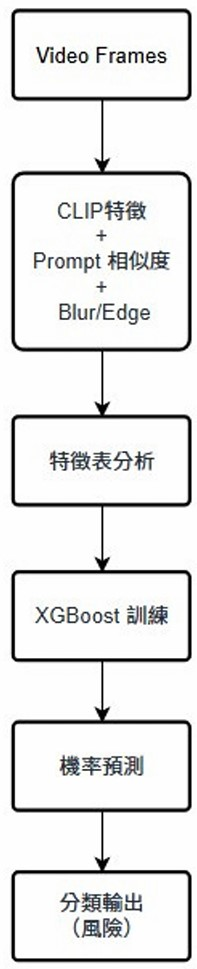
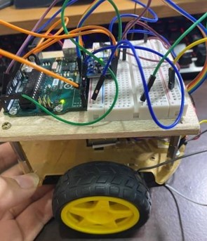
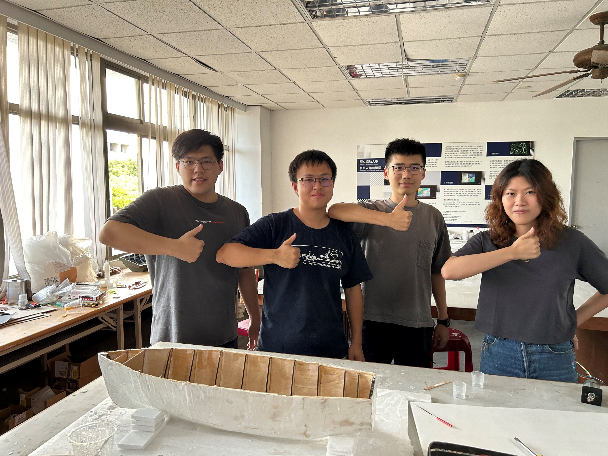

技能 / 研究興趣
**研究方向：** UAV-RIS × SWIPT、多協同深度強化學習（MPDRL）、多任務學習、VLM
**核心技術：** DRL 路徑規劃與 QoS 提升、CLIP 語意特徵與時序建模
**開發工具：** C/C++、Python (PyTorch/OpenCV)、嵌入式 (Rasberry Pi/STM32)、Docker、Linux、Git
B5G/6G通訊
訊號處理
ML/DL/RL
Python
C/C++
進行中專案
BigQuery AI／向量搜尋 + 多模態 RAG
建立向量索引與檢索擴展，支援多檔案與語意查詢，並串接前端問答與權責說明。
TTS（文字轉語音）管線
建立資料清理與對齊流程，評估說話人適配性，並與前端語音提示 API 介接。
Voronoi × UAV‑RIS 覆蓋規劃
以 Voronoi 區域化多 UAV 任務，結合 DRL 最佳化能量與 QoS，支援 SWIPT 場景。
學歷
國立成功大學｜電腦與通信工程研究所 碩士
研究主題：UAV‑RIS × 深度強化學習（DDPG/TD3）、SWIPT、通訊最佳化。
國立成功大學｜系統及船舶機電工程學系 學士
專題涵蓋：智慧無人船舶設計與製造、聲源辨識、數位影像處理與控制系統。
專案列表

聲源辨識系統 (Sound Source Identification)
- **降噪技術**：應用 Wiener、LogMMSE 演算法，提升語音辨識準確率。
- **核心功能**：實現基於互相關比對與語音模型訓練的聲源辨識。

影像處理與 YOLO 偵測
- **影像強化**：實作數位影像強化與邊緣檢出技術。
- **物件偵測**：應用 YOLO 模型進行物件辨識。

多任務學習（Unified-OneHead MTL）
- **模型架構**：整合分類、偵測、分割任務於單一模型頭部輸出。
- **優化策略**：導入 Replay Buffer 記憶機制，有效抑制模型遺忘問題。

輕量化動態卷積 (DynamicConv)
- **核心技術**：利用 MLP 動態生成卷積核心，支援多通道組合。
- **專案成果**：提升模型彈性與運算效率，適用於輕量級任務。

輕量級 Transformer 模型 (TinyViT)
- **模型優化**：實現 1.1M 參數、5M FLOPs 的精簡架構。
- **效能表現**：準確率達到 ResNet34 水準，並完成消融實驗分析。

MLB 賽事結果預測
- **資料分析**：進行資料前處理與特徵工程。
- **模型應用**：使用隨機森林模型並最佳化參數，最終排名 Top 13%（19/142）。

互動式履歷與面試系統
- **系統開發**：建置即時履歷解析與 Q&A 平台。
- **技術整合**：結合 OpenAI API、LangChain 框架與向量檢索技術。

交通事故預測
- **特徵工程**：應用 **CLIP 語意特徵**結合 **XGBoost** 模型。
- **競賽成果**：在 Kaggle 競賽中獲得 Top 9.2%（12/130）的佳績。

雙輪自平衡車 (LQR)
- **硬體實作**：使用 Arduino 與 C++ 程式實作倒單擺車控制系統。
- **控制演算法**：應用 MATLAB LQR 模擬並結合群體演算法進行參數調優。

智慧無人船舶設計與製造
- **系統整合**：以 Raspberry Pi 與 Arduino 為核心。
- **核心功能**：實現自主航行、聲源導引、影像辨識及光導導航等多項功能。